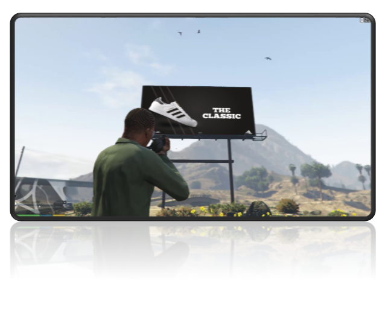

KABBAM
Typically, smaller budget games and other media lack the ability to include advertisements and monetisation’s like this. It could be a valuable tool that allows advertisers to treat small indie studio’s as ‘micro influencers’ and using them to deliver their material to a more direct and niche audience.

The global advertising spend in 2019 was expected to pass 560 billion dollars[1] and it shows. If you walk around the streets of your local city, you will see billboards, logo’s on t-shirts, stickers on walls, advertisements in the windows of every shop, marketing materials everywhere trying to get your attention and sell you a product.
If you’ve watched a movie lately you might have seen some clever product placements, not surprising considering that movies like James Bond - Quantum of Solace featured around $100m of promotional placements from brands such as Ford Motor Co., Smirnoff, Heineken, and Sony Electronics [2]. It should not come as a surprise that such a large advertising spend can occur in an industry that grossed over $42b in worldwide box office revenue in 2019 [3].
But if you have ever played a videogame, you might have noticed that the same objects representing advertisements in-game do not tend to advertise real world products. Which might seem strange given that the global revenue for video games in 2019 was over $152b [4]. Over 3 times the amount made by the box office in their most successful year EVER.
The product placements in movies are never too distracting if done well and they do not take away from the experience that customers are willing to pay for. Brands pay top dollar to have their products featured on the big screen and if provided with an intuitive and modern way to implement these ads into video games, the results could be game changing (pun intended).
Our goal is to create a cloud hosted web application that can serve as a ‘marketplace’ for advertising material. API endpoints will allow game developers access to serve advertising content dynamically into their games and user interactions or views would be tracked within the game and served back to the API to provide analytics on viewership to determine payments and further smart delivery of content. Essentially objects and surfaces inside games could dynamically update their textures to deliver advertising content based on the user currently viewing them.
Advertisers, Brands, and Marketing Agencies will be required to create an account through our web application where they will be able to use a set of tools to upload and customise advertising content and create audience profiles. These profiles would then be used to match the advertising materials with the locations that they will be displayed. The web application platform will need to provide a very deep level of customisation and targeting to ensure that it is competitive with other advertising platforms such as Facebook and Google.
The database and API will allow for advertising material to be appropriately tagged for display. It will allow for easy access to developers who wish to integrate advertisements into their products. It will also allow for streamlined reporting and data presentation to view the performance of the advertisements and determine when ads should be stopped, or payment required to continue to deliver them.
Advertisers would potentially pay up front when creating ads within the online marketplace, providing advertising credit. Which would be used based on the amount of views or the time the advertisements have been displayed, there would need to be a way to track and measure this, but I am confident it could easily be tracked within a database.
It might also be worth having some sort of consulting service for larger advertising companies who wish to have a more streamlined and customised advertising experience, this type of customisation and personalisation to the needs of the advertisers could allow this app to cater to larger organisations and ensure they adopt this platform as a tool to advertise with, maybe partnering them with specific upcoming projects or products./p>
After researching the required tools and technology it looks like we can boil it down to the following basic concepts.
The most essential part of this would be the website and the database.
Websites and databases both require programming and coding skills to design, build and maintain.
Specifically, for this project idea we need someone with a solid understanding of HTML, CSS, and JavaScript. These coding and programming skills will be required to get the website up to a professional standard. In addition, the database and API endpoints will require more specific knowledge especially if this project idea working with a cloud provider like AWS or Azure.
I believe all of this knowledge is readily available and definitely possible to implement, however it might be best to either consult experts, or hire some knowledgeable staff members.
The initial steps we need to take in the roadmap for creating a Minimum Viable Product (MVP) will be to ensure we can build our project by retaining someone with the necessary skills to build us a wireframe for Proof of Concept pitches to investors or for other people passionate about our project that can be bought onboard.
Link: [1]. Statista. 2020. Topic: Global Advertising Market. [online] Available at:
Link: [2] Theweek.com. 2020. James Bond's Record-Shattering Product Placement: By The Numbers. [online] Available at:
Link: [3] Billboard. 2020. 2019 Global Box Office Revenue Hit Record $42.5B Despite 4 Percent Dip In U.S.. [online] Available at:
Link: [4] 2019, T., 2020. The Global Games Market Will Generate $152.1 Billion In 2019 As The U.S. Overtakes China As The Biggest Market | Newzoo. [online] Newzoo. Available at:
Link: [5] 2020. [online] Available at: